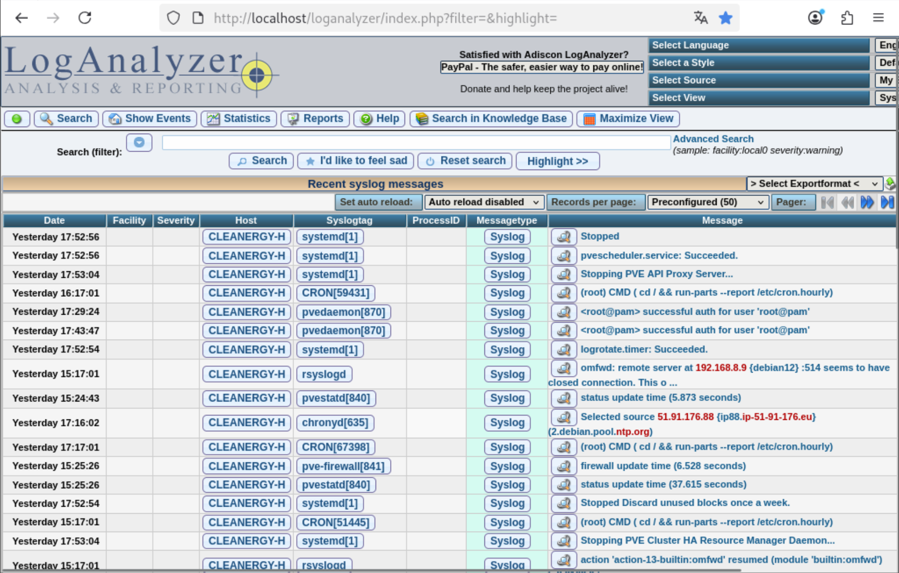
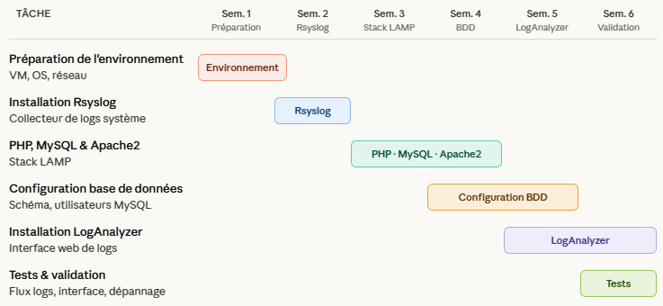
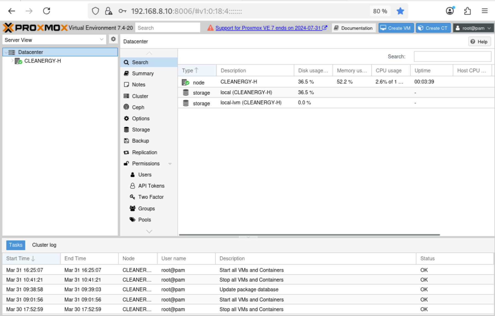
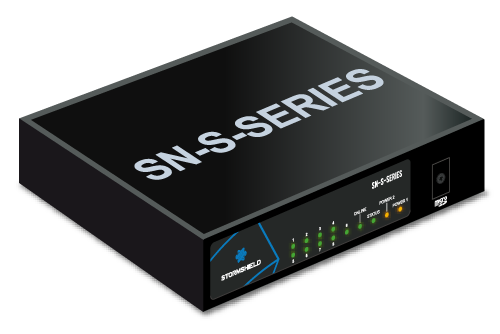

Administrateur
Systèmes & Réseaux
Étudiant en BTS SIO option SISR, passionné par l'infrastructure, la virtualisation et la cybersécurité.
Passionné d'infrastructure et de solutions résilientes
Étudiant en BTS SIO SISR au Lycée Louis Armand, j'ai développé des compétences en administration systèmes et réseaux à travers des stages en environnement professionnel.
Mes expériences chez Radio France et Sofinco m'ont permis d'intervenir sur du support, de l'assistance réseau et des missions de sécurité IT.
En constante veille technologique, je maîtrise la virtualisation, les services réseau (DNS/DHCP) et l'administration Active Directory.
Technologies & plateformes
Expériences en milieu professionnel

- Contribution GREEN-IT : réduction de l'impact environnemental du parc informatique 1.1 – Gérer le patrimoine informatique
- Plan de reprise (PRA / PCA / PSI) 1.1 – Gérer le patrimoine | 1.4 – Mode projet
- Processus de sécurité 1.1 – Gérer le patrimoine | 1.5 – Mise à disposition
- Plan de secours (continuité applications) 1.1 – Gérer le patrimoine | 1.5 – Mise à disposition
- Affiches cybersécurité 1.5 – Mettre à disposition un service

- Déploiement Windows 11 (masterisation) 1.5 – Mettre à disposition un service informatique
- Organisation du brassage réseau en baie 1.1 – Gérer le patrimoine informatique
- Maintenance hardware (diagnostic + remplacement) 1.1 – Gérer le patrimoine | 1.2 – Répondre aux incidents
- Support utilisateur (ODIN / GLPI) 1.2 – Répondre aux incidents | 1.5 – Mise à disposition
Projets Techniques
Mise en pratique des compétences en administration systèmes et réseaux






Analyse des enjeux critiques
Stormshield, rsyslog et environnements LAMP · Méthodologie : Google Alertes, Twitter (X)
Veille Sécurité & Infra
Surveillance active des vulnérabilités et bonnes pratiques
Vulnérabilité critique dans les pare-feux Stormshield permettant à un attaquant de provoquer un déni de service ou d'exécuter du code à distance, nécessitant une mise à jour urgente pour se protéger.
Consulter l'articleVulnérabilités dans PHP qui peuvent permettre à un attaquant de provoquer un déni de service, d'effectuer des attaques SSRF ou des injections SQL, avec des preuves d'exploitation déjà disponibles, rendant la mise à jour urgente.
Consulter l'articleVulnérabilités de rsyslog et leurs correctifs pour protéger les systèmes contre des attaques. Mise à jour recommandée pour toute infrastructure centralisant les logs.
Consulter l'articleParcours académique
Travaillons ensemble
Alternant sysadmin motivé
Disponible pour intégrer votre équipe en alternance et monter en compétence sur des projets d'infrastructure, cloud ou cybersécurité.
Envoyer un message →